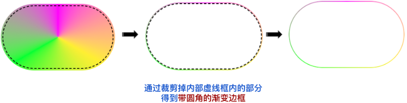
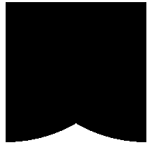
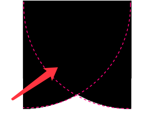
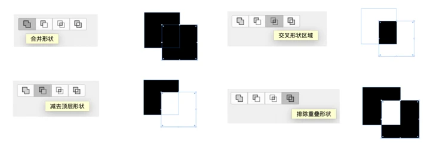
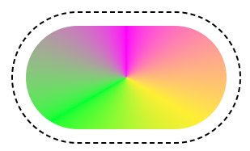

使用 mask 和 background-clip 巧妙实现带圆角的渐变边框
这里，我们介绍一种更为巧妙的方法。主要会利用 background-clip 和 mask 两个核心属性。
首先，我们利用背景 background 实现一个普通的渐变背景：
<div></div>
div {
position: relative;
width: 140px;
height: 80px;
border-radius: 100px;
background: conic-gradient(#ff00fa, #fe3, #0f3, #ff00fa);
}
利用角向渐变 background: conic-gradient(#ff00fa, #fe3, #0f3, #ff00fa)，我们得到了这么一个图形：
思考一下，如果我们有办法将图形中间部分镂空裁剪，我们不就能得到一个带圆角的渐变边框了吗？
通过一个示意图，你能很快明白到底是什么意思：
好，那剩下的问题就转换为了：
- 如何裁剪掉一个元素内部的区域，并且能够控制裁剪区域的大小
- 裁剪区域，与图形的轮廓是一致的
在 CSS 中想使用裁剪功能，首先想到的肯定是 clip-path，但是上面的例子已经证明了 clip-path 无法实现细边框的裁剪，因此，我们需要另寻解法。
而 CSS 中，另外一个与裁剪功能相关的属性就是 mask。
不了解
mask的，可以戳我的这几篇文章看看：奇妙的 CSS MASK、高阶切图技巧！基于单张图片的任意颜色转换
在此处，我们利用 mask，并且，最为核心的是，需要配合 mask-composite，实现图形轮廓的精确裁剪。
深入理解 mask-composite
什么是 mask-composite？
mask-composite: 属性指定了将应用于同一元素的多个蒙版图像相互合成的方式。
通俗点来说，他的作用就是，当一个元素存在多重 mask 时，我们就可以运用 -webkit-mask-composite 进行效果叠加。
举个栗子：
<div class="original"></div>
.original {
background: #000;
mask: radial-gradient(circle at 0 0, #000, #000 200px, transparent 200px);
}
我们用一个 radial-gradient 作为 mask，切割原本的矩形，得到一个新的图形。
如果再换一个方向：
<div class="original"></div>
.original {
background: #000;
mask: radial-gradient(circle at 100% 0, #000, #000 200px, transparent 200px);
}
如果我想得到这样一个效果：

该怎么做呢？
我们尝试合并上述两个 mask 的效果：
.mask {
background: #000;
mask: radial-gradient(circle at 100% 0, #000, #000 200px, transparent 200px),
radial-gradient(circle at 0 0, #000, #000 200px, transparent 200px);
}
效果如下：
与我们想象的不太一样，这是因为，两个 mask 的图形叠加，就是上述图形的效果，所以上述效果是没有问题的。
只是，我们想得到的是两个 mask 图形的重叠部分：
这时，我们就可以使用 mask-composite：
.mask {
background: #000;
mask: radial-gradient(circle at 100% 0, #000, #000 200px, transparent 200px),
radial-gradient(circle at 0 0, #000, #000 200px, transparent 200px);
-webkit-mask-composite: source-in;
}
添加了 -webkit-mask-composite: source-in 后，我们就可以得到两个 mask 图形的重叠部分，再基于这个重叠部分作用到整个 mask 遮罩：
CodePen Demo -- mask-composite Demo
-webkit-mask-composite 还可以实现非常多不同的功能，包括但不限于：
-webkit-mask-composite: clear; /*清除，不显示任何遮罩*/
-webkit-mask-composite: copy; /*只显示上方遮罩，不显示下方遮罩*/
-webkit-mask-composite: source-over;
-webkit-mask-composite: source-in; /*只显示重合的地方*/
-webkit-mask-composite: source-out; /*只显示上方遮罩，重合的地方不显示*/
-webkit-mask-composite: source-atop;
-webkit-mask-composite: destination-over;
-webkit-mask-composite: destination-in; /*只显示重合的地方*/
-webkit-mask-composite: destination-out; /*只显示下方遮罩，重合的地方不显示*/
-webkit-mask-composite: destination-atop;
-webkit-mask-composite: xor; /*只显示不重合的地方*/
看看这张图，就一目了然（图片源自 CSS mask 实现鼠标跟随镂空效果）
理解 background-clip
要实现最终效果，还有一个有意思的细节点需要掌握。那就是理解 backgrund-clip。
一般我们用 backgrund-clip 比较多的场景是 background-clip: text，用于将背景图作用与文字之上。
但是，其实 backgrund-clip 还有几个与 box-content 类似的取值：
{
background-clip: border-box; // 背景延伸到边框外沿（但是在边框之下）
background-clip: padding-box; // 边框下面没有背景，即背景延伸到内边距外沿。
background-clip: content-box; // 背景裁剪到内容区 (content-box) 外沿。
}
什么意思呢？background-clip 设置元素的背景（背景图片或颜色）是否延伸到边框下面。看看下面这张图，就是对 background-clip 很好的一个阐述：
而本文，我们会用到 content-box，举个例子：
<div></div>
div {
width: 140px;
height: 80px;
border-radius: 100px;
border: 1px dashed #000;
background: conic-gradient(#ff00fa, #fe3, #0f3, #ff00fa);
background-clip: content-box;
padding: 10px;
}
效果如下：
可以看到，此时，背景的填充不再是从元素的右上角开始，而是在内容区域，算上了 10px 的 padding 之后，开始绘制。
也就是说，基于 background-clip，是可以改变元素背景的绘制规则！这一点非常重要。
利用 mask 配合 mask-composite 实现图形轮廓裁剪
只有在掌握了 mask-composite 和 background-clip 的基础上，你才能理解下面整个裁剪代码个核心精髓处。
基于上述讲解，我们就可以利用上面的综合技巧，实现我们最终想要的 -- 带圆角的渐变边框。
代码如下：
<div></div>
div {
position: relative;
width: 140px;
height: 80px;
border-radius: 100px;
background: conic-gradient(#ff00fa, #fe3, #0f3, #ff00fa);
padding: 1px;
-webkit-mask: linear-gradient(#fff 0 100%) content-box, linear-gradient(
#fff 0 100%
);
-webkit-mask-composite: xor;
}
这样，我们就完美的得到了一个 1px 宽度的带圆角的渐变边框，并且，内部是镂空的：
通过控制上述的 padding: 1px 来控制元素的边框宽度。
完整的代码，你可以戳这里查看：CodePen Demo -- 纯 CSS 实现带圆角的渐变边框！